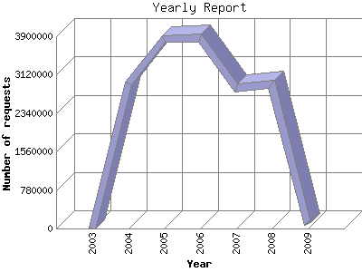

The Yearly Report shows total activity on your site for each calendar year.
Remember that each page hit can result in several server requests as the images
for each page are loaded.
Note: Most likely, the first and last years
will not represent a complete year's worth of data, resulting in lower hits.

| Year | Number of requests | Number of page requests | |
|---|---|---|---|
| 1. | 2009 | 87,887 | 8,938 |
| 2. | 2008 | 2,924,969 | 224,720 |
| 3. | 2007 | 2,857,472 | 198,054 |
| 4. | 2006 | 3,867,443 | 270,379 |
| 5. | 2005 | 3,847,274 | 234,024 |
| 6. | 2004 | 2,949,473 | 164,249 |
| 7. | 2003 | 4 | 4 |
Most active year 2006 : 270,379 pages sent.
Yearly average: 137546 pages sent. 24.487 KB bytes served. 2066815.25 requests handled.
This report was generated on January 18, 2009 00:22.
Report time frame December 18, 2003 11:34 to January 18, 2009 00:20.